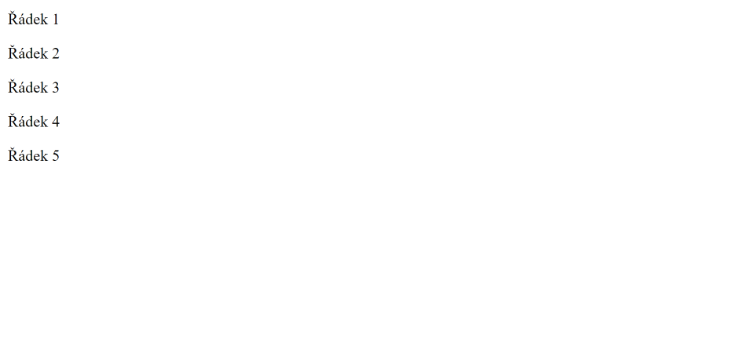
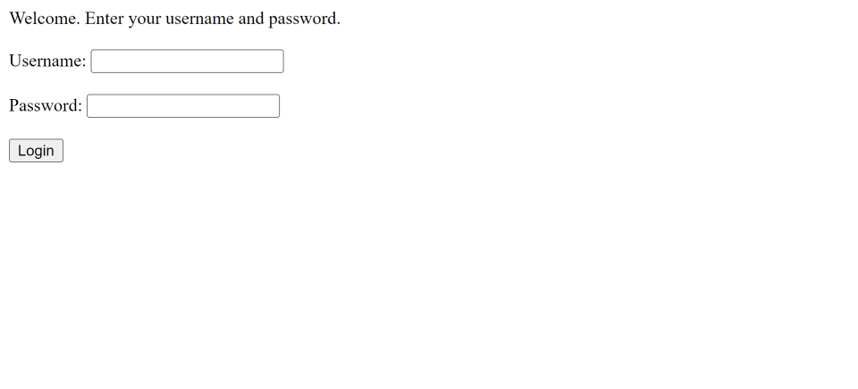
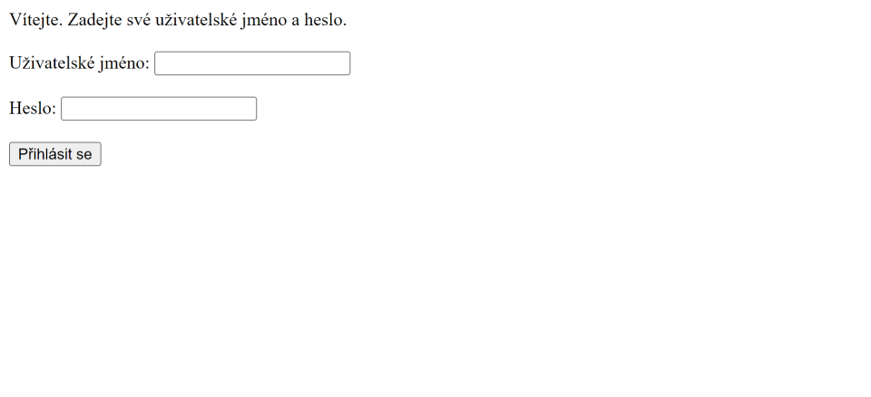
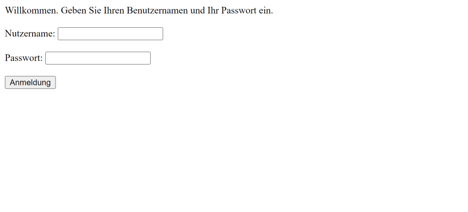
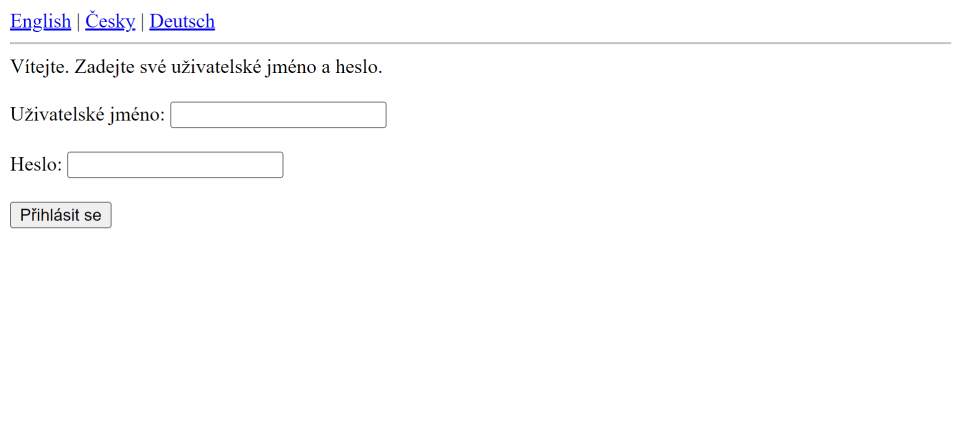

JSTL
V této části se podíváme na JSTL (JSP Standard Tag Library). Jedná se o knihovnu (nebo spíš knihovny) custom tagů, která poskytuje tagy, které jsou v JSP aplikacích často potřeba.
Typy JSTL tagů
JSTL tagy se dělí do pěti kategorií (knihoven). Následující tabulka je popisuje.
| Kategorie | URI | Často používaný prefix | Popis |
|---|---|---|---|
| Core tagy | http://java.sun.com/jsp/jstl/core | c | Tagy v této kategorii poskytují podporu pro proměnné, podmínky, cykly a tak podobně. |
| Funkční tagy | http://java.sun.com/jsp/jstl/functions | fn | Tagy v této kategorii poskytují podporu pro práci s řetězci (většinou). |
| Formátovací tagy | http://java.sun.com/jsp/jstl/fmt | fmt | Tagy v této kategorii poskytují podporu pro formátování. |
| XML tagy | http://java.sun.com/jsp/jstl/xml | x | Tagy v této kategorii poskytují podporu pro práci s XML. |
| SQL tagy | http://java.sun.com/jsp/jstl/sql | sql | Tagy v této kategorii poskytují podporu pro práci s relačními databázemi. |
Použití JSTL
Předtím než začneme se zkoumáním různých tagů, které nám JSTL nabízí, tak si zkusíme vytvořit projekt, ve kterém JSTL použijeme. Založíme si tedy nový projekt a začneme s tím, že si v souboru pom.xml kromě závislosti pro servlety přidáme i závislost pro JSTL.
- src
- main
- java
- resources
- webapp
- test
- java
- resources
- main
- target
<project xmlns="http://maven.apache.org/POM/4.0.0" xmlns:xsi="http://www.w3.org/2001/XMLSchema-instance" xsi:schemaLocation="http://maven.apache.org/POM/4.0.0 https://maven.apache.org/xsd/maven-4.0.0.xsd">
<modelVersion>4.0.0</modelVersion>
<groupId>io.github.jirkasa</groupId>
<artifactId>jstl</artifactId>
<version>0.0.1-SNAPSHOT</version>
<packaging>war</packaging>
<name>jstl</name>
<properties>
<project.build.sourceEncoding>UTF-8</project.build.sourceEncoding>
<project.reporting.outputEncoding>UTF-8</project.reporting.outputEncoding>
<java.version>17</java.version>
<maven.compiler.source>${java.version}</maven.compiler.source>
<maven.compiler.target>${java.version}</maven.compiler.target>
</properties>
<dependencies>
<dependency>
<groupId>javax.servlet</groupId>
<artifactId>javax.servlet-api</artifactId>
<version>4.0.1</version>
<scope>provided</scope>
</dependency>
<dependency>
<groupId>javax.servlet</groupId>
<artifactId>jstl</artifactId>
<version>1.2</version>
</dependency>
</dependencies>
</project>Teď si můžeme vytvořit JSP stránku (třeba "stranka.jsp"), ve které JSTL použijeme. Následující ukázka ukazuje její základní kód.
- src/main/webapp
<%@ page contentType="text/html" pageEncoding="UTF-8"%>
<!DOCTYPE html>
<html>
<head>
<meta charset="UTF-8">
<title>JSTL</title>
</head>
<body>
</body>
</html>Na stránce si zkusíme pomocí taglib direktivy nadefinovat JSTL knihovnu pro core tagy a použít nějaký její tag. Zkusíme si třeba pomocí forEach tagu vypsat pod sebe 5 řádků textu. Potom si jednotlivé tagy JSTL knihovny projdeme, teď nám jde hlavně o to, zkusit si JSTL do projektu vůbec přidat.
- src/main/webapp
<%@ page contentType="text/html" pageEncoding="UTF-8"%>
<%@ taglib uri="http://java.sun.com/jsp/jstl/core" prefix="c" %>
<!DOCTYPE html>
<html>
<head>
<meta charset="UTF-8">
<title>JSTL</title>
</head>
<body>
<c:forEach var="i" begin="1" end="5">
Řádek <c:out value="${i}"/><p>
</c:forEach>
</body>
</html>Pokud si aplikaci spustíte a navštívíte http://localhost:8080/jstl/stranka.jsp, tak se vám zobrazí stránka, kterou ukazuje následující obrázek.
JSTL knihovnu jsme si zkusili přidat do projektu a použít. Ve zbytku této části si můžeme jednotlivé tagy, které nám JSTL nabízí, projít.
Core tagy
Do core kategorie patří tagy, které poskytují podporu pro proměnné, podmínky, cykly, a tak podobně. Jednoduše se jedná o takové základní tagy. Následující tabulka popisuje, které tagy do této kategorie patří.
| Tag | Popis |
|---|---|
| c:out | Vypisuje výsledek pro expression, podobně jako expression tag (<%= ... %>). |
| c:import | Poskytuje podobnou funkcionalitu jako jsp:include action tag. Umožňuje ale přidat obsah jakéhokoliv zdroje (klidně i mimo server). |
| c:set | Umožňuje nastavit výsledek expression jako proměnnou. |
| c:remove | Umožňuje odstranit proměnnou. |
| c:catch | Umožňuje zachytit vyjímky. |
| c:if | Umožňuje vytvořit podmínku. |
| c:choose | Umožňuje vytvořit sérii podmínek. |
| c:when | Používá se s tagem c:choose. |
| c:otherwise | Používá se s tagem c:choose. |
| c:forEach | Umožňuje provádět nějaký kód několikrát nebo pro každou položku v kolekci. |
| c:forTokens | Umožňuje rozdělit řetězec na části a provádět pro každou část nějaký kód. |
| c:redirect | Umožňuje provést přesměrování na jinou URL. |
| c:url | Umožňuje vytvořit URL. |
| c:param | Používá se s tagem c:url. |
c:out
Tag c:out se používá k vypsání obsahu na stránku. Je podobný jako expression tag. Rozdíl je, že c:out automaticky escapne HTML tagy, takže jeho použitím zamezíme XSS (Cross Site Scripting) útokům. Potenciální tagy, které se na stránku vypíší, se zobrazí jen jako text, ne jako tagy.
<!-- toto se na stránku přidá jako script tag -->
<%= "<script>console.log('ahoj');</script>" %>
<c:set var="obsah" value="<script>console.log('ahoj');</script>"/>
<!-- toto se na stránku přidá jako text -->
<c:out value="${ obsah }"/>c:import
Tag c:import slouží k načtení jakéhokoliv zdroje (klidně i mimo server). Následující ukázka ukazuje, jak můžeme například obsah stránky z URL "https://jirkasa.github.io/" načíst do proměnné "data".
<!-- načte obsah stránky z URL "https://jirkasa.github.io/" do proměnné "data" -->
<c:import var="data" url="https://jirkasa.github.io/"/>c:set
Pomocí tagu c:set můžeme nastavit proměnnou v nějakém rozsahu. Defaultně v page rozsahu, nebo můžeme rozsah definovat prostřednictvím scope atributu.
<!-- vytvoření proměnné cislo v page rozsahu -->
<c:set var="cislo" value="${20}"/>
<!-- vytvoření proměnné cislo v session rozsahu -->
<c:set var="cislo" scope="session" value="${30}"/>
<!-- vypsání proměnné z page rozsahu -->
${cislo}
<!-- vypsání proměnné ze session rozsahu -->
<!-- (musíme použít sessionScope.cislo, protože máme proměnnou cislo i v page rozsahu) -->
${sessionScope.cislo}c:remove
Pomocí tagu c:remove můžeme odstranit proměnnou ze všech rozsahů nebo specifického rozsahu. Pokud nenastavíme atribut scope, tak se proměnná odstraní ze všech rozsahů. Pokud jej nastavíme, tak se odstraní jen z rozsahu, který specifikujeme.
<!-- odstranění proměnné cislo ze všech rozsahů -->
<c:remove var="cislo"/>
<!-- odstranění proměnné cislo z rozsahu page -->
<c:remove var="cislo" scope="page"/>c:catch
Tag c:catch slouží k zachycení vyjímky, kterou vyhodí kód, který obaluje. Následující kód by na stránku vypsal "Zachycena vyjímka: java.lang.ArithmeticException: / by zero".
<!-- pokud dojde uvnitř c:catch tagu k vyjímce, tak
se vyjímka uloží do proměnné catchException -->
<c:catch var="catchException">
<% int x = 10 / 0; %>
</c:catch>
<!-- pokud proměnná catchException není null (došlo
k vyjímce), tak se na stránku vyjímka vypíše -->
<c:if test="${catchException != null}">
<p>Zachycena vyjímka: ${catchException}</p>
</c:if>c:if
Pomocí tagu c:if můžeme v JSP stránce vytvořit podmínku.
<c:if test="${3 > 2}">
<p>Toto se vypíše jen když platí podmínka.</p>
</c:if>c:choose
Tag c:choose slouží k vytvoření série podmínek. Uvnitř něj můžeme použít tagy c:when a c:otherwise. Pomocí tagu c:when můžeme vytvořit podmínku a tag c:otherwise slouží k tomu, že se kód uvnitř něj zavolá, pokud ani jedna podmínka nastavená v c:when tagu neplatí. V následující ukázce to určitě pochopíte lépe.
<c:set var="cislo1" value="${3}"/>
<c:set var="cislo2" value="${2}"/>
<c:choose>
<c:when test="${cislo1 < cislo2}">
<p>cislo1 je menší než cislo2</p>
</c:when>
<c:when test="${cislo1 > cislo2}">
<p>cislo1 je větší než cislo2</p>
</c:when>
<c:otherwise>
<p>cislo1 se rovná cislo2</p>
</c:otherwise>
</c:choose>c:forEach
Pomocí tagu c:forEach můžeme vytvořit cyklus. Můžeme provádět nějaký kód několikrát za sebou nebo procházet položky v kolekci.
<!-- vypsání 5 řádků -->
<c:forEach var="i" begin="1" end="5">
<p>Řádek ${i}</p>
</c:forEach>
<!-- vypsání jmen všech uživatelů z listu users -->
<c:forEach var="user" items="${users}">
<p>${user.name}</p>
</c:forEach>c:forTokens
Pomocí tagu c:forTokens můžeme rozdělit řetězec na části a provádět pro každou část nějaký kód.
<!-- kód uvnitř následujícího c:forTokens tagu se provede
pro hodnotu "nosorožec", "opice" a "medvěd" -->
<c:forTokens var="zvire" items="nosorožec,opice,medvěd" delims=",">
<c:out value="${zvire}"/><p>
</c:forTokens>c:redirect
Tag c:redirect umožňuje provádět přesměrování na jinou URL.
<!-- přesměrování na https://jirkasa.github.io/ -->
<c:redirect url="https://jirkasa.github.io/"/>c:url
Pomocí tagu c:url můžeme vytvořit URL. Je to alternativa k response.encodeURL() metodě. Pokud tag c:url zavoláme bez atributu var, tak se výsledek vypíše na stránku, jinak se uloží do proměnné.
<!-- vypsání URL na stránku -->
<c:url value="/stranka.jsp"/>
<!-- uložení URL do proměnné mojeURL -->
<c:url var="mojeURL" value="/stranka.jsp"/>c:param
Tag c:param se používá uvnitř tagu c:url ke specifikování query parametrů.
<!-- vytvoří URL /nazev-projektu/stranka.jsp?page=1&category=keyboards -->
<c:url var="mojeURL" value="/stranka.jsp">
<c:param name="page" value="1"/>
<c:param name="category" value="keyboards"/>
</c:url>Funkční tagy
V kategorii funkčních tagů se nacházejí funkce, které nám umožňují různě pracovat s řetězci (většinou). Následující tabulka je ukazuje.
| Funkce | Popis |
|---|---|
| fn:contains | Zjišťuje, zda řetězec obsahuje předaný podřetězec. |
| fn:containsIgnoreCase | Zjišťuje, zda řetězec obsahuje předaný podřetězec bez rozlišení malých a velkých písmen. |
| fn:startsWith | Zjišťuje, zda řetězec začíná na předaný podřetězec. |
| fn:endsWith | Zjišťuje, zda řetězec končí na předaný podřetězec. |
| fn:escapeXml | Escapuje znaky, které by jinak byly interpretovány jako XML/HTML tagy. |
| fn:indexOf | Vrací index prvního výskytu podřetězce v řetězci. |
| fn:trim | Odstraňuje bílé znaky ze začátku a konce řetězce. |
| fn:split | Rozděluje řetězec do pole podřetězců. |
| fn:join | Spojuje pole řetězců do jednoho řetězce. |
| fn:toLowerCase | Převádí řetězec na malá písmena. |
| fn:toUpperCase | Převádí řetězec na velká písmena. |
| fn:substring | Vytváří podřetězec z řetězce. |
| fn:substringAfter | Vrací část řetězce nacházející se za předaným podřetězcem. |
| fn:substringBefore | Vrací část řetězce nacházející se před předaným podřetězcem. |
| fn:length | Zjišťuje délku řetězce nebo počet položek v kolekci. |
| fn:replace | Nahrazuje veškerý výskyt předaného podřetězce v řetězci za jiný řetězec. |
fn:contains
Funkce fn:contains se používá ke zjištění, zda řetězec obsahuje předaný podřetězec.
<c:set var="retezec" value="Toto je řetězec."/>
<c:if test="${fn:contains(retezec, 'řetězec')}">
<p>Řetězec obsahuje slovo "řetězec".</p>
</c:if>fn:containsIgnoreCase
Funkce fn:containsIgnoreCase se používá ke zjištění, zda řetězec obsahuje předaný podřetězec bez rozlišení malých a velkých písmen.
<c:set var="retezec" value="Toto je řetězec."/>
<c:if test="${fn:containsIgnoreCase(retezec, 'ŘETĚZEC')}">
<p>Řetězec obsahuje slovo "řetězec".</p>
</c:if>fn:startsWith
Funkce fn:startsWith se používá ke zjištění, zda řetězec začíná na předaný podřetězec.
<c:set var="retezec" value="Toto je řetězec."/>
<c:if test="${fn:startsWith(retezec, 'Toto')}">
<p>Řetězec začíná na "Toto".</p>
</c:if>fn:endsWith
Funkce fn:endsWith se používá ke zjištění, zda řetězec končí na předaný podřetězec.
<c:set var="retezec" value="Toto je řetězec."/>
<c:if test="${fn:endsWith(retezec, 'řetězec.')}">
<p>Řetězec končí na "řetězec.".</p>
</c:if>fn:escapeXml
Funkce fn:escapeXml se používá k escapnutí znáků, které by jinak byly interpretovány jako XML/HTML tagy.
<c:set var="retezec" value="<script>console.log('Ahoj')</script>"/>
<!-- toto se na stránku přidá jako script element -->
${retezec}
<!-- toto se přidá na stránku jako text "<script>console.log('Ahoj')</script>" -->
${fn:escapeXml(retezec)}fn:indexOf
Funkce fn:indexOf se používá k nalezení indexu (pozice) prvního výskytu podřetězce v řetězci.
<c:set var="retezec" value="Toto je řetězec."/>
<!-- funkce indexOf v tomto případě vrátí hodnotu 5 -->
<p>Index (pozice) podřetězce "je": ${fn:indexOf(retezec, "je")}</p>fn:trim
Funkce fn:trim se používá k odstranění bílých znaků ze začátku a konce řetězce.
<c:set var="retezec" value=" Toto je řetězec. "/>
<!-- funkce fn:trim v tomto případě vrátí "Toto je řetězec." -->
<p>${fn:trim(retezec)}</p>fn:split
Funkce fn:split se používá k rozdělení řetězce do pole podřetězců podle předaného oddělovače.
<c:set var="retezec" value="nosorožec-lev-opice"/>
<!-- vytvoření pole zvirata ["nosorožec", "lev", "opice"] -->
<c:set var="zvirata" value="${fn:split(retezec, '-')}"/>
<!-- výsledné pole můžeme třeba projet forEach cyklem -->
<c:forEach var="zvire" items="${zvirata}">
<p>${zvire}</p>
</c:forEach>fn:join
Funkce fn:join se používá ke spojení pole řetězců do jednoho řetězce.
<c:set var="retezec" value="nosorožec-lev-opice"/>
<!-- vytvoření pole zvirata ["nosorožec", "lev", "opice"] -->
<c:set var="zvirata" value="${fn:split(retezec, '-')}"/>
<!-- vytvoření řetězce "nosorožec,lev,opice" -->
<c:set var="retezec2" value="${fn:join(zvirata, ',')}"/>fn:toLowerCase
Funkce fn:toLowerCase se používá k převedení řetězce na malá písmena.
<c:set var="retezec" value="TOTO JE ŘETĚZEC."/>
<!-- vytvoří řetězec "toto je řetězec." -->
${fn:toLowerCase(retezec)}fn:toUpperCase
Funkce fn:toUpperCase se používá k převedení řetězce na velká písmena.
<c:set var="retezec" value="Toto je řetězec."/>
<!-- vytvoří řetězec "TOTO JE ŘETĚZEC." -->
${fn:toUpperCase(retezec)}fn:substring
Funkce fn:substring slouží k získání podřetězce z řetězce.
<c:set var="retezec" value="Toto je řetězec."/>
<!-- vytvoří řetězec "je" -->
${fn:substring(retezec, 5, 7)}fn:substringAfter
Funkce fn:substringAfter se používá k získání podřetězce z řetězce, nacházejícím se za předaným podřetězcem.
<c:set var="retezec" value="Toto je řetězec."/>
<!-- vytvoří řetězec " řetězec." -->
${fn:substringAfter(retezec, "je")}fn:substringBefore
Funkce fn:substringBefore se používá k získání podřetězce z řetězce, nacházejícím se před předaným podřetězcem.
<c:set var="retezec" value="Toto je řetězec."/>
<!-- vytvoří řetězec "Toto " -->
${fn:substringBefore(retezec, "je")}fn:length
Funkce fn:length slouží k získání délky řetězce nebo počtu položek v kolekci.
<c:set var="retezec" value="Toto je řetězec."/>
<p>Délka řetězce je ${fn:length(retezec)}</p>
<c:set var="zvirata" value="${fn:split(\"nosorožec-lev-opice\", '-')}"/>
<p>Délka pole je ${fn:length(zvirata)}</p>fn:replace
Funkce fn:replace slouží k nahrazení veškerého výskytu předaného podřetězce v řetězci za jiný řetězec.
<c:set var="retezec" value="Toto je řetězec."/>
<!-- vytvoří řetězec "Toto je text." -->
${fn:replace(retezec, "řetězec", "text")}Formátovací tagy
Do kategorie formátovacích tagů patří tagy, které nám umožňují provádět formátování a internacionalizaci. Následující tabulka popisuje, které tagy do této kategorie patří.
| Tag | Popis |
|---|---|
| fmt:formatNumber | Formátuje číslo se specifickou přesností nebo formátem. |
| fmt:parseNumber | Parsuje řetězcovou reprezentaci čísla, měny nebo procenta. |
| fmt:formatDate | Formátuje datum a/nebo čas. |
| fmt:parseDate | Parsuje řetězcovou reprezentaci datumu a/nebo času. |
| fmt:bundle | Používá se pro internacionalizaci k načtení souboru hodnot. |
| fmt:setLocale | Nastavuje locale. |
| fmt:setBundle | Používá se pro internacionalizaci k načtení souboru hodnot. |
| fmt:timeZone | Nastavuje časovou zónu, která má vliv na formátování uvnitř těla tagu. |
| fmt:setTimeZone | Nastavuje časovou zónu, která má vliv na formátování. |
| fmt:message | Používá se k vypisování hodnot ve více jazycích. |
| fmt:requestEncoding | Nastavuje kódování requestu. |
fmt:formatNumber
Tag fmt:formatNumber slouží k formátování čísel. Následující tabulka ukazuje atributy, které můžeme pro tento atribut nastavit.
| Atribut | Povinné | Defaultní hodnota | Popis |
|---|---|---|---|
| value | ano | žádná | Numerická hodnota ke zformátování. |
| type | ne | NUMBER | NUMBER, CURRENCY nebo PERCENT |
| pattern | ne | žádná | Vlastní formátovací vzor. |
| currencyCode | ne | z defaultního locale | Kód měny |
| currencySymbol | ne | z defaultního locale | Symbol měny |
| groupingUsed | ne | true | Určuje, zda se mají čísla seskupovat (true/false). |
| maxIntegerDigits | ne | žádná | Určuje maximální počet číslic, které mohou být zobrazeny v celočíselné části. Pokud jich má číslo více, tak se oříznou. |
| minIntegerDigits | ne | žádná | Určuje minimální počet číslic, které musejí být zobrazeny v celočíselné části. Pokud jich má číslo méně, tak se tam umístí nuly. |
| maxFractionDigits | ne | žádná | Určuje maximální počet číslic, které mohou být zobrazeny v desetinné části. Pokud jich má číslo více, tak se oříznou. |
| minFractionDigits | ne | žádná | Určuje minimální počet číslic, které musejí být zobrazeny v desetinné části. Pokud jich má číslo méně, tak se tam umístí nuly. |
| var | ne | bez specifikování var atributu se výsledek vypíše na stránku | Jméno proměnné, do které se má uložit zformátované číslo. |
| scope | ne | page | Rozsah proměnné, do které se ukládá zformátované číslo. |
Následující ukázka ukazuje pár příkladů formátování čísel.
<!-- 20,00 Kč -->
<fmt:formatNumber value="${20}" type="currency" currencyCode="CZK"/>
<!-- 7 666,254 -->
<fmt:formatNumber value="${197666.25367}" maxIntegerDigits="4"/>
<!-- 197 666,25 -->
<fmt:formatNumber value="${197666.25367}" maxFractionDigits="2"/>
<!-- 20,00 -->
<fmt:formatNumber value="${20}" groupingUsed="false" minFractionDigits="2"/>fmt:parseNumber
Tag fmt:parseNumber slouží k parsování řetězcové reprezentace čísel, měn nebo procent. Následující tabulka ukazuje atributy, které můžeme pro tento atribut nastavit.
| Atribut | Povinné | Defaultní hodnota | Popis |
|---|---|---|---|
| value | ano | žádná | Hodnota k parsnutí. |
| type | ne | NUMBER | NUMBER, CURRENCY nebo PERCENT |
| parseLocale | ne | defaultní locale | Locale, který se má při parsování použít. |
| integerOnly | ne | false | Určuje, zda se má číslo parsnout jen jako celé číslo nebo se má ponechat desetinná část. |
| pattern | ne | žádná | Vlastní vzor pro parsování. |
| var | ne | bez specifikování var atributu se výsledek vypíše na stránku | Jméno proměnné, do které se má uložit parsnuté číslo. |
| scope | ne | page | Rozsah proměnné, do které se ukládá parsnuté číslo. |
Následující ukázka ukazuje dva příklady parsování čísla.
<!-- 20 -->
<fmt:parseNumber value="20,00 Kč"/>
<!-- 196358 -->
<fmt:parseNumber value="196358,354" integerOnly="true"/>fmt:formatDate
Tag fmt:formatDate slouží k formátování datumu a/nebo času. Následující tabulka ukazuje atributy, které můžeme pro tento atribut nastavit.
| Atribut | Povinné | Defaultní hodnota | Popis |
|---|---|---|---|
| value | ano | žádná | Datum ke zformátování. |
| type | ne | DATE | DATE, TIME nebo BOTH |
| dataStyle | ne | DEFAULT | FULL, LONG, MEDIUM, SHORT nebo DEFAULT |
| timeStyle | ne | DEFAULT | FULL, LONG, MEDIUM, SHORT nebo DEFAULT |
| pattern | ne | žádná | Vlastní formátovací vzor. |
| timeZone | ne | defaultní časová zóna | Časová zóna formátovaného datumu. |
| var | ne | bez specifikování var atributu se výsledek vypíše na stránku | Jméno proměnné, do které se má uložit zformátovaný datum. |
| scope | ne | page | Rozsah proměnné, do které se ukládá zformátovaný datum. |
Následující ukázka ukazuje pár příkladů formátování datumu.
<c:set var="date" value="<%= new java.util.Date(123, 11, 30, 21, 0) %>" />
<!-- 21:00:00 -->
<fmt:formatDate value="${date}" type="TIME" />
<!-- 2023-12-30 -->
<fmt:formatDate value="${date}" pattern="yyyy-MM-dd" />
<!-- 30. 12. 2023 -->
<fmt:formatDate value="${date}" dateStyle="MEDIUM" />fmt:parseDate
Tag fmt:parseDate slouží k parsování řetězcové reprezentace datumů na java.util.Date objekt. Následující tabulka ukazuje atributy, které můžeme pro tento atribut nastavit.
| Atribut | Povinné | Defaultní hodnota | Popis |
|---|---|---|---|
| value | ano | žádná | Datum k parsnutí. |
| type | ne | DATE | DATE, TIME nebo BOTH |
| dataStyle | ne | DEFAULT | FULL, LONG, MEDIUM, SHORT nebo DEFAULT |
| timeStyle | ne | DEFAULT | FULL, LONG, MEDIUM, SHORT nebo DEFAULT |
| parseLocale | ne | defaultní locale | Locale, který se má při parsování použít. |
| pattern | ne | žádná | Vlastní vzor pro parsování. |
| timeZone | ne | defaultní časová zóna | Časová zóna parsovaného datumu. |
| var | ne | bez specifikování var atributu se výsledek vypíše na stránku | Jméno proměnné, do které se má uložit zformátovaný datum. |
| scope | ne | page | Rozsah proměnné, do které se ukládá zformátovaný datum. |
Následující ukázka ukazuje příklad parsnutí datumu.
<fmt:parseDate var="date" value="${'2023-12-30'}" pattern="yyyy-MM-dd"/>I18N tagy
Na tagy fmt:setBundle, fmt:setMessage a fmt:setLocale bude lepší se podívat dohromady. S jejich pomocí můžeme provádět internacionalizaci (I18N). Jde o to, že namísto toho, abychom do stránky vkládali text natvrdo, načítáme jej odjinud. Díky tomu můžeme naši webovou aplikaci přeložit do více jazyků.
Pro ukázku si založíme nový projekt, ve kterém si internacionalizaci ukážeme. Začneme tím, že si do souboru pom.xml kromě závislosti pro servlety přidáme závislost i pro JSTL.
- src
- main
- java
- resources
- webapp
- test
- java
- resources
- main
- target
<project xmlns="http://maven.apache.org/POM/4.0.0" xmlns:xsi="http://www.w3.org/2001/XMLSchema-instance" xsi:schemaLocation="http://maven.apache.org/POM/4.0.0 https://maven.apache.org/xsd/maven-4.0.0.xsd">
<modelVersion>4.0.0</modelVersion>
<groupId>io.github.jirkasa</groupId>
<artifactId>i18n</artifactId>
<version>0.0.1-SNAPSHOT</version>
<packaging>war</packaging>
<name>i18n</name>
<properties>
<project.build.sourceEncoding>UTF-8</project.build.sourceEncoding>
<project.reporting.outputEncoding>UTF-8</project.reporting.outputEncoding>
<java.version>17</java.version>
<maven.compiler.source>${java.version}</maven.compiler.source>
<maven.compiler.target>${java.version}</maven.compiler.target>
</properties>
<dependencies>
<dependency>
<groupId>javax.servlet</groupId>
<artifactId>javax.servlet-api</artifactId>
<version>4.0.1</version>
<scope>provided</scope>
</dependency>
<dependency>
<groupId>javax.servlet</groupId>
<artifactId>jstl</artifactId>
<version>1.2</version>
</dependency>
</dependencies>
</project>Jelikož chceme vytvářet aplikaci pro více jazyků, tak nebudeme text natvrdo psát do JSP stránky ale budeme jej načítat z .properties souborů, které uložíme do složky "src/main/resources". Tyto soubory slouží k ukládání textu ve specifickém jazyce a musejí mít název ve specifickém formátu. Ukazuje jej následující ukázka. Na začátku je nějaký název, který je následován localem (kombinací kódu jazyka a kódu země).
<název souboru>_<kód jazyka>_<kód země>.propertiesNásledující tabulka ukazuje pár příkladů názvu .properties souboru. Pokud locale nespecifikujeme (specifikujeme jen název), tak se jedná o soubor s defaultním jazykem, který se použije, pokud se pro jazyk nenajde vlastní soubor.
| Název souboru | Jazyk | Země |
|---|---|---|
| labels.properties | defaultní jazyk | |
| labels_en_GB.properties | Angličtina | Spojené Království |
| labels_de_DE.properties | Němčina | Německo |
| labels_cs_CZ.properties | Čeština | Česko |
Pro začátek si v našem projektu vytvoříme soubor "labels.properties", který bude obsahovat text v defaultním jazyce. V našem případě to bude angličtina. Soubor uložíme do složky "src/main/resources", ve kterém vytvoříme nějaký balíček (hierarchii složek, která se pro Java balíčky tvoří i ve složce "src/main/java"). Složka resources vlastně slouží pro ukládání všech věcí, které nejsou Java třídy. Properties soubory obsahují data ve formě klíčů a hodnot. Každý řádek souboru je ve formátu "klíč=hodnota". Následující ukázka ukazuje obsah pro náš vytvořený soubor "labels.properties".
- src/main/resources/io/github/jirkasa
- src/main/resources/io/github/jirkasa
label.welcome=Welcome. Enter your username and password.
label.username=Username
label.password=Password
label.login=LoginTeď můžeme text z našeho properties souboru použít v JSP stránce. Vytvoříme si tedy novou JSP stránku, kterou můžeme pojmenovat třeba jako "stranka.jsp". Na této stránce si nadefinujeme JSTL knihovnu s formátovacími tagy a na začátku stránky použijeme tag fmt:setBundle, pomocí kterého použijeme properties soubor, který jsme si vytvořili. Atributem basename specifikujeme jen balíček a název bez localu a koncovky souboru.
- src/main/resources/io
- src/main/resources/io/github
- src/main/resources/io/github/jirkasa
- src/main/webapp
<%@ page contentType="text/html" pageEncoding="UTF-8"%>
<%@ taglib uri="http://java.sun.com/jsp/jstl/fmt" prefix="fmt" %>
<fmt:setBundle basename="io.github.jirkasa.labels" />Po použití fmt:setBundle tagu můžeme na stránku vložit hodnoty z properties souboru pomocí tagu fmt:message, kde vždy jen specifikujeme klíč hodnoty, kterou chceme použít. Následující ukázka ukazuje dokončenou JSP stránku.
- src/main/resources/io
- src/main/resources/io/github
- src/main/resources/io/github/jirkasa
- src/main/webapp
<%@ page contentType="text/html" pageEncoding="UTF-8"%>
<%@ taglib uri="http://java.sun.com/jsp/jstl/fmt" prefix="fmt" %>
<fmt:setBundle basename="io.github.jirkasa.labels" />
<!DOCTYPE html>
<html>
<head>
<meta charset="UTF-8">
<title>I18N</title>
</head>
<body>
<fmt:message key="label.welcome" />
<br><br>
<fmt:message key="label.username" />: <input type="text" name="username" />
<br><br>
<fmt:message key="label.password" />: <input type="password" name="password" />
<br><br>
<button><fmt:message key="label.login" /></button>
</body>
</html>Pokud aplikaci spustíte a navštívíte http://localhost:8080/i18n/stranka.jsp, tak uvidíte stránku, kterou ukazuje následující obrázek. Hodnoty z properties souboru se tedy použily.
Teď si zkusíme vytvořit properties soubor pro češtinu. Ve složce resources (v balíčku) tedy vytvoříme soubor "labels_cs_CZ.properties". Obsah pro něj ukazuje následující ukázka.
- src/main/resources/io/github/jirkasa
label.welcome=Vítejte. Zadejte své uživatelské jméno a heslo.
label.username=Uživatelské jméno
label.password=Heslo
label.login=Přihlásit sePokud si JSP stránku otevřete teď, tak ji uvidíte v češtině (možná budete muset restartovat server). Pokud v prohlížeči nemáte nastavenou češtinu, tak ji česky neuvidíte. Prohlížeč totiž automaticky na server posílá locale prostřednitvím Accept-Language headeru, podle toho, jaký jazyk je v prohlížeči nastavený.
Zkusíme si přidat properties soubor ještě pro jeden jazyk a poté uživateli umožníme, aby si mohl jazyk webové stránky sám měnit. Následující ukázka ukazuje soubor "labels_de_DE.properties" pro němčinu.
- src/main/resources/io/github/jirkasa
label.welcome=Willkommen. Geben Sie Ihren Benutzernamen und Ihr Passwort ein.
label.username=Nutzername
label.password=Passwort
label.login=AnmeldungKe změně localu můžeme použít tag fmt:setLocale. Následující ukázka ukazuje, jak můžeme na naší stránce naprevno nastavit němčinu.
- src/main/resources/io
- src/main/resources/io/github
- src/main/resources/io/github/jirkasa
- src/main/webapp
<%@ page contentType="text/html" pageEncoding="UTF-8"%>
<%@ taglib uri="http://java.sun.com/jsp/jstl/fmt" prefix="fmt" %>
<fmt:setLocale value="de_DE"/>
<fmt:setBundle basename="io.github.jirkasa.labels" />
<!DOCTYPE html>
<html>
<head>
<meta charset="UTF-8">
<title>I18N</title>
</head>
<body>
<fmt:message key="label.welcome" />
<br><br>
<fmt:message key="label.username" />: <input type="text" name="username" />
<br><br>
<fmt:message key="label.password" />: <input type="password" name="password" />
<br><br>
<button><fmt:message key="label.login" /></button>
</body>
</html>Když si teď JSP stránku otevřete, uvidíte ji v němčině.
Teď uživateli umožníme, aby prostřednictvím query parametru mohl nastavit, v jakém jazyku se mu má stránka zobrazit. Do naší JSP stránky přidáme tři odkazy, pomocí kterých půjde jazyk stránky přepínat. Všechny odkazy budou odkazovat na stejnou stránku na které se nacházejí, akorát budou mít jiný query parametr. V JSP stránce si hodnotu query parametru přečteme a nastavíme podle ní locale. Následující ukázka ukazuje upravený kód stránky.
- src/main/resources/io
- src/main/resources/io/github
- src/main/resources/io/github/jirkasa
- src/main/webapp
<%@ page contentType="text/html" pageEncoding="UTF-8"%>
<%@ taglib uri="http://java.sun.com/jsp/jstl/fmt" prefix="fmt" %>
<!-- nastavení locale podle query parametru nebo použití defaultního locale, který
se poslal v headeru Accept-Language (jazyka, který má uživatel nastavený v prohlížeči) -->
<fmt:setLocale value="${not empty param.language ? param.language : pageContext.request.locale}"/>
<fmt:setBundle basename="io.github.jirkasa.labels" />
<!DOCTYPE html>
<html>
<head>
<meta charset="UTF-8">
<title>I18N</title>
</head>
<body>
<a href="./stranka.jsp?language=en_GB">English</a> | <a href="./stranka.jsp?language=cs_CZ">Česky</a> | <a href="./stranka.jsp?language=de_DE">Deutsch</a>
<hr>
<fmt:message key="label.welcome" />
<br><br>
<fmt:message key="label.username" />: <input type="text" name="username" />
<br><br>
<fmt:message key="label.password" />: <input type="password" name="password" />
<br><br>
<button><fmt:message key="label.login" /></button>
</body>
</html>Nyní máme možnost zobrazit si stránku v různých jazycích.
Kromě tagu fmt:setBundle existuje ještě tag fmt:bundle. Ten má podobnou funkcionalitu, akorát poskytuje lokalizovaný text jen pro tagy fmt:message, které se nacházejí uvnitř jeho těla.
<fmt:bundle basename="io.github.jirkasa.labels">
<fmt:message key="label.welcome" />
</fmt:bundle>fmt:setTimeZone
Tag fmt:setTimeZone slouží k nastavení časové zóny, která se poté použije třeba na formátování datumů.
<fmt:setTimeZone value="CET"/>
<fmt:formatDate value="<%= new java.util.Date() %>" dateStyle="FULL" />Pokud si chcete vypsat datum ve všech dostupných časových zónách, můžete to udělat způsobem, který ukazuje následující ukázka.
<c:set var="date" value="<%= new java.util.Date(123, 11, 30, 21, 0) %>" />
<c:forEach var="zone" items="<%= java.util.TimeZone.getAvailableIDs()%>">
<fmt:setTimeZone value="${zone}"/>
${zone} - <fmt:formatDate value="${date}" dateStyle="FULL" />
<br>
</c:forEach>fmt:timeZone
Tag fmt:timeZone poskytuje podobnou funkcionalitu jako tag fmt:setTimeZone. Rozdíl je v tom, že má vliv jen na formátování, které se děje uvnitř jeho těla.
<fmt:timeZone value="CET">
<fmt:formatDate value="<%= new java.util.Date() %>" dateStyle="FULL" />
</fmt:timeZone>fmt:requestEncoding
Tag fmt:requestEncoding slouží pro nastavení kódování na requestu, stejně jako metoda setCharacterEncoding z rozhraní ServletRequest.
<fmt:requestEncoding value="UTF-8" />Pro tuto část je to vše. Prošli jsme si různé tagy ze třech kategorií JSTL knihovny. Spíš jsme si je jen představili, takže pokud byste se o nich potřebovali dozvědět více informací, tak si pro ně budete muset najít jiný zdroj. Tagy v kategorii XML a SQL si tu procházet nebudeme. Tagy z kategorie XML totiž slouží pro práci s XML a tagy z kategorie SQL pro práci s relačními databázemi. Není podle mě dobré něco takového v JSP dělat. V příští části, která je o MVC vzoru, zjistíte proč. Pokud používáme JSP zároveň se servlety, tak bychom měli JSP stránky používat jen k zobrazování dat, ne k jejich zpracování.